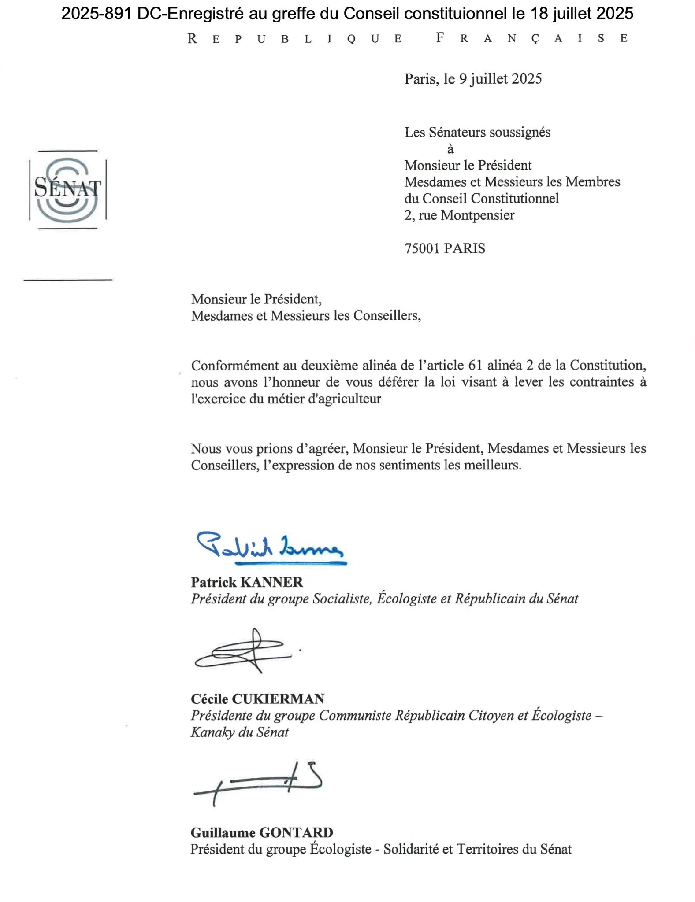

Actualité parlementaire
Loi Duplomb. Trois groupes du Sénat saisissent le Conseil constitutionnel
Date indiquée par Facebook · 22 juillet 2025
Repères éditoriaux
Nous avons relayé la saisine du Conseil constitutionnel par trois groupes de gauche et écologiste du Sénat. La lettre jointe permet de retrouver la démarche et ses signataires.
Texte conservé avec la publication
Loi Duplomb
Les 3 groupes de gauche et écologiste au Sénat ont saisi le Conseil constitutionnel sur la loi "Duplomb". Une loi contraire à la Charte de l'environnement et votée grâce à un détournement de procédure manifeste.

Sources
Archive rouge · export Facebook · AR-0002-FB-01058
À lire aussi · Non à la Loi Duplomb â Pour la santé, la sécurité, lâintelligence collective.